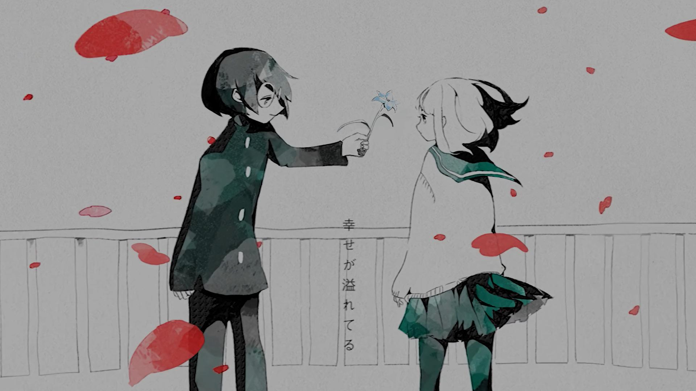
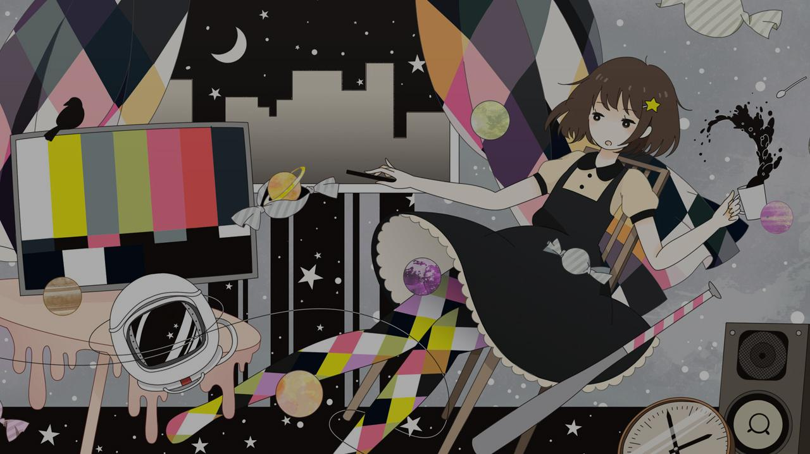

5.33
NM
NM
翡翠のまち
鎖那
5.20
NM
NM
If You Want Peace... Prepare for War
Children Of Bodom
Mapper: The Cube
Difficulty: headphonewearer's Insane
Beatmap ID: 4260076
CS
4
AR
9.0
OD
8.3

170.0

3:49

1754

4.80
NM
NM
Kill The Beat
lapix
5.19
NM
NM
Arcahv
Feryquitous
5.22
NM
NM
Lawn Wake IV (Black)
The Flashbulb
4.29
NM
NM
深海のリトルクライ feat. 土岐麻子
sasakure.UK
Mapper: Shurelia
Difficulty: AncuL's Insane
Beatmap ID: 2022008
CS
4.3
AR
9.0
OD
8.5
156.0
3:59
1161
![ShinRa-Bansho - Pink Kurage to, Sotto, Kiss o Shita. (UberFazz) [Lunatic.]](./darkened-backgrounds/2470722.jpg)
5.36
HD
HD
ピンククラゲと、そっと、キスをした。
森羅万象
![monet - Shukufuku Sareta Machi (seros) [Furenzoku Sonzai]](./darkened-backgrounds/3419840.jpg)
4.87
HD
HD
祝福された街
monet
4.75
HD
HD
綺羅キラー (feat. Mori Calliope)
ずっと真夜中でいいのに。
Mapper: Agllius
Difficulty: Mocaotic's Insane
Beatmap ID: 4093558
CS
4
AR
9.0
OD
8.0
142.0
3:48
1508
5.32
HR
HR
浮雲
夏央 feat. 倚水
Mapper: Sarawatlism
Difficulty: pnky's Insane
Beatmap ID: 3969715
CS
5.2
AR
10.0
OD
10.0
205.0
3:31
1122
4.58
HR
HR
届かない永遠の距離
Silver Forest
Mapper: EveLiya
Difficulty: ConsumerOfBean's hyper(CS5 Edit)
Beatmap ID: 4572221
CS
6.5
AR
10.0
OD
9.8
168.0
2:32
1115
4.86
HR
HR
V!rtuaresort
seatrus
Mapper: -Atri-
Difficulty: LeCandy+Atri's Insane
Beatmap ID: 3228526
CS
5.2
AR
10.0
OD
9.8
160.0
2:00
824
5.43
DT
DT
帰想本能 feat. 悠木碧
DECO*27
5.40
DT
DT
飛翔
At the Garret
5.40
DT
DT
undress me
Cö shu Nie
4.76
DT
DT
山茶花读不懂白玫瑰 (Cut Ver.)
橘猫烧鲷鱼
4.91 (5.17)
FM
FM
Free
Kitsune²
4.53 (5.19)
FM
FM
2 Minutes Euphoria -2分間の多幸感-
Sta & Feryquitous
Mapper: Ryuusei Aika
Difficulty: Pata-Mon's Insane
Beatmap ID: 2691754
CS
5
AR
8.0
OD
7.0
170.0
2:40
949
4.38 (4.60)
FM
FM
Tidal
SaMZIng/HJLL
5.53
TB
TB
Lost Within
A Himitsu